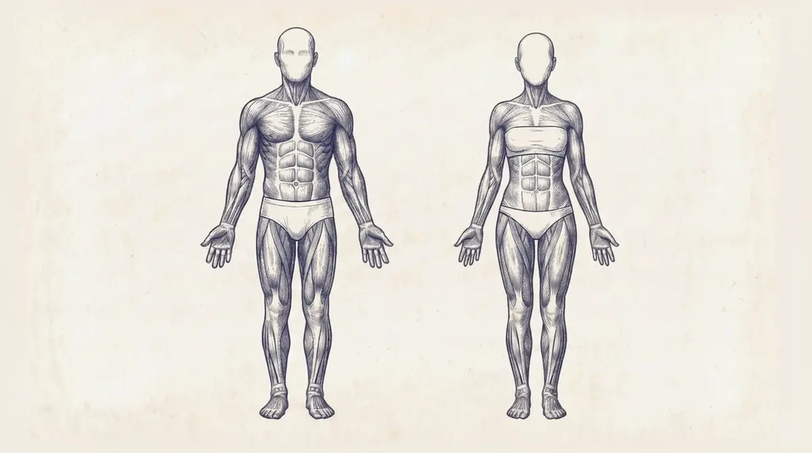

The free protocol for men 18 to 40
For a healthy man who wants a week to follow, not a reading list. Lift, walk, sleep, eat, in that shape, starting Monday. Every line below carries its evidence grade and how many sources sit behind it, and where my files are thin, the page says so. Recommendations, not prescriptions.
This site is general information from research and my own experience, not medical advice and not from a licensed health professional; check with your doctor before acting on it.
This week
Four lifts, three easy cardio sessions, one hard piece. If you can only do two days, skip to the busy-week fallback. Swap the days around; keep the shape.
- MondayLift: upperAbout an hour. Chest, back, shoulders, arms. Every set 0 to 3 reps from failure.
- TuesdayLift: lowerAbout 50 minutes. Squat pattern, hinge, legs, calves, a carry.
- WednesdayZone 2, 60 minSteady. You can still talk in full sentences, but it is work.
- ThursdayLift: upperSame session as Monday. Add a rep or a little weight where you can.
- FridayLift: lowerSame session as Tuesday.
- SaturdayZone 2, 60 to 90 min, then the hard pieceFinish with 4 rounds of 4 minutes hard, 3 minutes easy. The only hard cardio of the week.
- SundayZone 2, 60 min, or a long walkEasy. The week's easy hours matter more than any one session.
- Every dayBed and wake within 30 minutes of the same time, at least 7 h 15 min asleep. 8 to 10 thousand steps. Three meals, each with 30 g of protein or more. 40 g of fibre. A 10-minute walk after meals. No caffeine in the 8 to 10 hours before bed. Nothing to eat in the last 2 hours before bed, and the last proper meal 3 to 4 hours out.
Training
How often
Hit each muscle at least twice a week. Past that, frequency is a scheduling tool, not a growth driver: once a week and three times a week grew muscle about the same when the weekly sets were equal. Likely · 3 sources Solid · 3 sources
Twice a week is a preference from the people I read, not a trial result. Its real job is keeping each session under the per-session cap below. Stacking 20 chest sets on a Monday turns at least half of them into junk, in Nippard's estimate; 10 on Monday and 10 on Thursday progresses better. Opinion · 3 sources
Pick the split you will actually show up for. Four days upper/lower, or full body two to three times a week, are the two I would start with. Push/pull/legs six days a week is too much for a beginner. Opinion · 3 sources
How much
10 to 20 hard sets per muscle per week. More than 10 sets a week gave almost double the growth of fewer than 10. Likely · 5 sources Solid · 2 sources
Nobody has found the ceiling. In a pooled analysis more sets kept adding growth from 4 up to 43 a week, with less per added set; in a crossover, the leg that added about 20% to its usual volume gained best, whatever it started from. Likely · 2 sources Solid · 4 sources
Where the ceiling sits is an open fight in my files: one sketch calls 20 to 30 sets "potential overtraining", another says no study has ever shown a loss from more volume. I write 10 to 20 and stop there. Nippard's own stated numbers have changed between 2021 and 2025.
Per session, growth rises clearly up to about 6 hard sets per muscle and then plateaus. Six is a ceiling, not a target. If you want more weekly sets, add a day; do not stack them into one session. Likely · 5 sources
The 6-set figure comes from a paywalled analysis I could not verify, and its author later backed off it: "there's probably a huge amount of individuality", with some people fine at 10 to 12.
Two to three sets per exercise was about 40% more effective than one set. Solid · 2 sources One set of leg extensions raised muscle protein synthesis 130%; three sets, 210%. Tripling the sets did not double the response. Solid · 3 sources
The busy-week fallback. After 16 weeks at three sessions a week, 20-to-35-year-olds kept their muscle for 32 weeks on one-third or even one-ninth of that volume; the one-third dose even added a little fibre growth. Solid · 4 sources That result is for the young: the 60-to-75-year-olds in the same study lost size on the smallest dose. My fallback for a busy week, translated from that: two full-body sessions, one hard set per exercise, under 45 minutes, every set hard.
How hard
Most sets end 0 to 3 reps from failure. Six or more reps left in the tank is a wasted set. Likely · 5 sources
Failure itself is not required. Going all the way adds a little size and nothing for strength. Solid · 1 source In 15 studies, sets to failure were not superior for growth. Solid · 2 sources In 42 trained lifters doing one set per exercise twice a week, failure beat 2-in-reserve by a small margin for size and jump, and strength gains were the same. Solid · 2 sources
My reading of those three: the lower your volume, the more failure matters; at high volume, failure on every set is a fatigue and injury bill. Likely · 1 source
Heavy barbell lifts: stop 2 to 3 reps short, even on the last set. Machines, cables and single-joint lifts: take the last set to failure, where it is safe. Likely · 5 sources The reason is fatigue cost and safety, not evidence that muscle grows differently per rep in reserve on a barbell.
The target moves with the load. With a 5-to-8-rep weight, stopping 3 short is as good as failure; moderate loads, 1 to 2 short; sets of 20 to 30 pretty much need failure; sets of 40 to 50 are a poor use of time even at failure. Likely · 4 sources
A 30 to 50% loss of rep speed is the band to stop in, about 1 to 2 reps left. Likely · 3 sources The cue you can feel for it, a clearly noticeable slowdown, is Krieger's. Opinion Calibrate now and then: take a machine or cable set to true failure, or you cannot know what "2 left" feels like; the estimate improves with practice. Likely · 2 sources
Reps and tempo
Anything from 5 to 30 reps grows muscle the same if the set gets close to failure. Solid · 6 sources Below about 20% of your max (the subjects averaged 67 reps) grows less. Solid · 4 sources There is probably no reason to go past 30. Opinion
For strength, heavy multi-set work in the 1-to-5-rep range has the strongest effect; the differences between sensible programs are usually small. Solid · 3 sources
A practical spread: about three quarters of your sets in the 6-to-12 range (up to 15), the rest heavier for strength or lighter for variety. The 6-to-12 window is about practicality, not superiority. Opinion · 4 sources
Main lifts (a squat, a hinge, a horizontal press, a vertical press, a horizontal pull, a vertical pull, a carry): 3 to 6 reps, 2 to 3 reps in reserve, 2 to 3 minutes rest, progressed by adding weight. Everything else carries the muscle work in higher reps. Likely · 1 source This is my own audit's ruling for a strength-first priority, not an external trial. The carry has no growth evidence behind it in my files; it is there for grip and for the long game.
Control the lowering. A rep lasts 2 to 8 seconds; never let the weight free-fall. The lowering half is very likely the more important half for growth. Solid · 3 sources A 2-to-4-second lowering with a fast lift is the default I use. Opinion The last reps of a set are the most productive and the place people stop controlling it. Mechanism
Range of motion is the biggest technique factor. Use the range that fully stretches the muscle: squat at least to parallel, ideally below; curls and presses to a deep stretch at the bottom. Solid · 6 sources The stretched half of a rep is worth more than the squeezed half, so partial reps only pay in the stretched range. Likely
Which exercises
Pick lifts that load the muscle hard at its long length, feel smooth and pain-free through the whole range, and are easy to progress week to week. If balance is eating the tension (a one-leg squat on a wobble board), the target muscle is not getting it. Likely · 4 sources The tier lists you see online are judgement calls on top of that principle, not trial rankings.
Free weights and machines build muscle about equally when the sets are hard. Machines and cables give high tension for less fatigue and are the safer place to go to failure. Solid · 3 sources
Picks with a head-to-head study behind them: an overhead triceps extension grew the triceps about 40% more than a pressdown over 12 weeks; a seated leg curl about 50% more hamstring than lying; incline bench matched flat for the mid and lower chest and added upper chest (anything from 20 to 45 degrees works); a standing calf raise beat seated; a preacher curl beat an incline curl for the lower biceps. Solid · 6 sources Each of those is one study, quoted through one creator.
The squat family comes first because about 55% of a man's muscle is in his legs. A hack squat, pendulum, high-bar back squat, Smith-machine squat or Bulgarian split squat all count; the leg extension covers the one quad head squats do not fully train. Solid · 4 sources Which squat is "best" is opinion.
For the hinge, the Romanian deadlift is the default: much less fatiguing than a conventional deadlift for the same or more stimulus. Learn the conventional pull and get strong on it at least once; just do not build your week on it. Opinion · 5 sources
A barbell-only program (squat, bench, deadlift, pull-up, row) under-works the biceps, side and rear delts, abs, hamstrings and calves. Give them their own sets. Opinion · 3 sources
No exercise is mandatory after the basics. Swap a pull-up for a pulldown, a barbell squat for a hack squat; progressed the same way, they give similar gains. Strength is specific, so do the lifts you want to get good at. Likely · 4 sources
If you can only do five lifts: a squat variation, a pull-up or pulldown, an incline bench, a Romanian deadlift, a chest-supported row. Five more: cable lateral raise, preacher curl, overhead cable triceps extension, leg extension with the seat back, seated leg curl. Opinion · 3 sources
The two sessions in the grid
One example that fits the numbers above. Compounds at 2 to 3 in reserve; the last set of each machine or cable lift to failure.
Upper (Monday and Thursday)
- Incline bench press3 × 6 to 10
- Chest-supported row3 × 8 to 12
- Pull-up or pulldown3 × 6 to 10
- Machine chest press or cable flye, deep stretch3 × 10 to 15
- A vertical press2 × 6 to 10
- Cable lateral raise3 × 12 to 15
- Preacher curl2 × 8 to 12
- Overhead cable triceps extension2 × 10 to 15
Lower (Tuesday and Friday)
- Squat variation (hack, pendulum, Smith or high-bar)3 × 4 to 6
- Romanian deadlift3 × 6 to 8
- Leg extension, seat back2 × 10 to 15
- Seated leg curl3 × 10 to 15
- Standing calf raise3 × 10 to 15
- Loaded carry2 × 30 to 40 m
That is 12 chest sets, 12 back sets, 10 quad sets and 12 hamstring sets a week, inside the 10-to-20 band, at the 6-set per-session ceiling for chest, back and hamstrings and 5 for quads. Side delts and biceps sit at 6 and 4 direct sets plus what pressing and pulling give them; add a set if they lag. In this example only the squat runs the 3-to-6 strength rule; the other main lifts sit in the hypertrophy range.
Rest and warm-up
Two to three minutes between sets on compounds, at least one minute on single-joint lifts, three to five when the bar is heavy. Shorter is worse. Likely · 6 sources
Reps falling across sets (8, 7, 6) is correct; that is fatigue doing its job. A collapse from 6 to 4 on bench usually means the rest was too short. Fix rest first, load second. Likely · 2 sources
Dynamic movement before, static stretching after. Static stretching costs about 3.7% of performance in the minutes after, PNF 4.4%; dynamic work adds about 1.3%. Foam rolling: +4.0% flexibility, +1.8% strength, negligible. The real harm is static holds longer than 60 seconds per muscle with no dynamic warm-up. Solid · 1 source
Ramp the first heavy lift of the day with lighter sets. Warm-up sets never count toward your volume. Opinion · 3 sources How many ramp sets, at what percentages: not in my files.
Progression
Lifting the same weight for the same reps two years from now will not keep you growing. Each week, add a little weight or a rep or two. Opinion · 4 sources Every source I have agrees on this one and none disputes it; the row grade is low only because nobody ran a trial on the obvious.
The standard method: pick a weight for the top of your rep range at 1 to 3 in reserve, add reps at that weight (3 × 10, then 3 × 11, then 3 × 12), then add weight and drop back to 10. Main lifts in the 3-to-6 range progress by weight. When stuck, add a set or swap the exercise and restart. Better technique (more control on the way down, less momentum, more range) also counts as progress, and thinking about the muscle on isolation lifts can add growth. Opinion · 4 sources Likely · 4 sources
A rep range describes the load, not a target. Got 14 on a set of "8 to 12"? The weight was light, but those reps were not wasted; they built muscle. The cap exists so you can pick a load, protect later sets and track honestly. Likely · 3 sources
If you like a rule for the jumps: upper body about +2.5% (at least 2.5 lb), lower body to the next plate; four or more reps to spare, add about 6%; a miss, take 6% off. Opinion · 3 sources Those percentages are bookkeeping conventions from one lifter's tracker, not evidence. Use them as an example.
Straight sets, ascending pyramids and reverse pyramids grow muscle the same. Reverse pyramids move the most total weight; straight sets are the easiest to track. Solid · 3 sources
What matters, in order: how close to failure you train, weekly sets per muscle, hitting each muscle about twice a week, load rising over months, and only then the progression scheme. Do not over-engineer the fifth while the second is the real bottleneck. Opinion · 2 sources
Stalls and deloads
When progress stops, check effort, calories, sleep and protein before you touch the program. If those are honest and you are not dieting, adding volume is the first move. Opinion · 3 sources People vary enormously: in 585 subjects on the same 12-week program, muscle size changed anywhere from −2% to +59% and strength from 0% to +250%. Solid · 3 sources
Deload when the data says so, not the calendar. Triggers: your estimated max on a lift flat or down for two weeks (deload that lift only), a joint or tendon that keeps talking, sleep or heart-rate variability sliding for several days, or motivation collapsing with no other cause. Opinion · 3 sources Those triggers are my own design. There is no controlled evidence that a deload every few weeks beats training straight until the data says stop. Likely · 3 sources
How to deload: keep the working weight, cut the sets (3 to 2, 2 to 1), stop 3 to 4 reps short. Do not drop to a light 60%: dropping the load is what causes detraining. Likely · 3 sources "Every 4 to 6 weeks" is powerlifting tradition, not a hypertrophy result. Gap · 3 sources

Zone 2 and intensity
Why it is in the week
Aerobic fitness is one of the strongest predictors of how long you live. In a large treadmill cohort, the top 2.5% for their age had about five times lower all-cause mortality than the bottom 25%. Solid · 4 sources The higher it goes, the more it keeps paying, with no plateau found. Likely · 3 sources That is observational, and the "elite" bar people quote is for a 50-year-old, not for you.
The easy base
Three Zone 2 days a week produce adaptations "for sure", four is ideal, five or six if time allows; 60 to 90 minutes each. Likely · 4 sources That is San-Millán's lab observation, not a trial. About 150 minutes a week of moderate work is where most of the mortality benefit lands; it keeps rising to about 300 and then flattens. Likely · 1 source
Other people's floors: 150 minutes a week (Johnson); 30 minutes three or four times a week (Attia's clinic); two sessions of 50 to 60 minutes plus one interval day (Siim). Opinion · 4 sources They disagree with each other. My week starts at three sessions of 60 and grows toward four.
Spread the hours. For four hours a week, four 60-minute sessions beat two of 120. One day a week does nothing; two maintains what you have. Opinion · 2 sources
Mitochondria build over months to years; the top end (your max oxygen uptake) moves in weeks to months. Do not expect the base in six weeks. Opinion · 2 sources
Finding Zone 2
The talk test. Comfortable conversation is too easy. Zone 2 is the hardest pace at which you can still speak full sentences and breathe through your nose, and the person listening can tell you are working. If you cannot talk, you have left it. Likely · 3 sources The nose-breathing half is my own rule; the talk test is the sourced part.
There is no settled heart-rate band. The best-sourced version is 70 to 80% of your measured max, but 70% may sit near 1.7 mmol, just under the lactate line, and 80% near 5 mmol, well past it, so it is only a starting point. Let the talk test overrule any number. Opinion · 4 sources No formula from your age exists in my files that I trust. Gap · 4 sources
The lab definition is blood lactate at or under about 2 mmol/L. You will not have that number; the talk test is the honest stand-in. Likely · 3 sources
A wrist tracker's heart rate is good enough for Zone 2 and for intervals. A treadmill's distance reads high on an incline, and a curved, non-motorised treadmill runs harder at the same displayed speed, so never set your band from a session on one. Likely · 1 source
Running the session
Zone 2 first; the hard piece, if there is one, at the end. Hard work early raises lactate and lowers fat burning for the rest of the session. Hold a steady output: a ride that averages Zone 2 by swinging between easy and hard is not Zone 2, and drifting up into Zone 3 costs hard-cardio fatigue without delivering the base. Mechanism · 4 sources
Zone 2 and a lift on the same day: which goes first is open in my files. Nobody in my sources presents data that cardio costs you muscle if you lift, eat enough and do the cardio. Opinion · 5 sources
The hard piece
Once a week: four minutes at the hardest pace you can hold for four minutes, then easy, four rounds. With warm-up and cool-down it is about an hour. Likely · 2 sources In one trial, six weeks of it beat ten 1-minute efforts and beat 45 minutes of steady work; +7.2% in max oxygen uptake over eight weeks. Likely · 1 source
The versions differ: Attia says 4 to 6 rounds with 4 minutes recovery; Johnson 4 rounds with 3 minutes, at a pace where you cannot speak comfortably; Siim 4 rounds at 85 to 95% of max heart rate with 3 to 4 minutes rest. Likely · 2 sources I run four rounds, three minutes easy. Every heart-rate version of this rests on a measured max, which you probably do not have, so go by effort: if you could hold a conversation, it was not a hard piece.
To progress it: keep the minutes fixed and make speed the variable. Your heart rate should reach the target band by the end of rounds three and four, not in the first two minutes. Add 0.5 km/h after two complete sessions; drop 0.5 km/h if round four fails twice; never shorten the recovery; run at 1% incline. Likely · 2 sources That is my own rule; only the 1% incline cites a paper.
Longer intervals (over 2 minutes), adding up to 15-plus minutes over 4 to 12 weeks, gave the most benefit across 53 studies, though every interval length worked. Likely · 1 source
How often: one hard session a week is the dose I run, and the one Attia and Siim name. Never stack a second one in the same week. Opinion · 5 sources No file I have gives a tested "sessions per week" number beyond one.
Short on time
Three all-out 20-second sprints, three times a week (about 30 minutes a week including the rests) matched 45 minutes of steady work at 70% of max three times a week: +19% in peak oxygen uptake over 12 weeks, with equal gains in insulin sensitivity, mitochondria and body composition. Solid · 5 sources After about six weeks the steady work and the 4-minute intervals overtake sprints, and sprint gains plateau around week ten, so I read this as a finding for people short on time, not a reason to drop the base.
Pick one hard format, not two: sprints or the four-minute rounds. Opinion Sprint work is 30 seconds or less, all out, with 2 to 3 minutes recovery, a couple of times a week and never on consecutive days. Likely · 1 source End a sprint session on quality: when your best effort drops about 10%, stop. Shortening the efforts to keep going turns power work into conditioning. Opinion · 2 sources
A collapsed week: in one two-day study, weekend-only training (70 minutes at about 80% of max plus 8 × 4-minute hard rounds) matched four sessions spread over the week. The floor my files give from that: 70 minutes of Zone 2, ideally in one session, plus 30 minutes of hard intervals a week. A fallback, not the plan. Likely · 1 source
Stalls and the mix
About 40% of people look like non-responders in a meta-analysis; raising weekly volume made almost all of them respond. Likely · 1 source So when fitness stalls, add easy hours, not intensity: six sessions beat four beat two, and easy work needs almost no recovery. Opinion
People who only go hard show worse mitochondrial function than people who do a bit of everything, and all-hard is not sustainable; elite endurance athletes do most of their sessions easy. Zone 2 is the base, the hard piece is the weekly top-up, sprints are optional seasoning. Opinion · 3 sources
Daily steps: the mortality benefit rises steeply to about 8 to 10 thousand a day and then flattens. Solid · 3 sources
Reference points for max oxygen uptake, in mL/kg/min, age-unspecified: above 60 is elite, about 50 excellent, about 40 good, under 30 poor. Under 40: keep lifting and walk your 10 thousand. Over 40: add the aerobic base. Over 50: base plus a hard piece. Opinion · 1 source No age-matched table exists in my files.
Sleep and recovery
The two numbers
Bed and wake within 30 minutes of the same time, and at least 7 hours 15 minutes asleep. Regularity out-predicts hours: the most regular fifth of sleepers had 30 to 48% lower risk of death, and consistency predicted survival better than total duration. Likely · 2 sources The 7 h 15 and the 30-minute window are my rules; the cohort behind the regularity finding is unnamed in my files. The clock itself is your choice.
Growth hormone is released in the first two to three hours of sleep, most when nothing was eaten in the two hours before and bedtime is regular. Going to bed much later than usual misses that pulse. Likely · 2 sources
The room and the evening
Cool, dark, phone out of reach, screens off 60 minutes before bed. Room temperature between 64 and 68 °F: my own range is 64 to 66 °F, Johnson's 65 to 68 °F, and they overlap at 65 to 66 °F. Likely · 4 sources
Red or amber light in the evening. Red suppresses melatonin least, but "does not suppress" is stronger than the data, and how dim the light is matters as much as its colour. Likely · 3 sources
Cheap adds: an eye mask, silicone ear plugs, a nasal strip. The evidence for mouth tape in adults without sleep apnoea is thin. Opinion · 1 source
Caffeine's half-life is about six hours: a 4 pm coffee is half a coffee at 10 pm. The literature supports a cut-off 8 to 10 hours before bed. Likely · 5 sources The 12-hour cut-off in my own rules, and in Johnson's, is unsourced. Opinion · 5 sources
Nothing to eat in the two hours before bed; last proper food two to six hours before lights-out (Johnson says four, Siim five to six); no hard training in the hour before bed. Opinion · 2 sources A 2026 meta-analysis of 41 trials found an early dinner, before 5 pm, beat later dinners for weight, insulin sensitivity, waist and glucose when calories were not controlled; when calories were matched, the trials find no difference. Likely · 2 sources
Alcohol breaks up REM sleep and raises your pre-bed resting heart rate, with food within four hours, screens within the hour, caffeine and an argument after 5 pm. One night of drinking is asserted to cut testosterone by 23% for a day and to impair muscle protein synthesis. Opinion · 3 sources The numbers are unnamed in my files; the mechanism is the useful part.
What a short night costs
Short sleep raises the hunger hormone and blunts the fullness one. Four hours a night for 14 nights gave +11% visceral fat; six hours or less made people 4.2 times as likely to catch a cold. Likely · 4 sources Sleep is the first thing to read when progress stalls: look at 14 nights before you change a calorie.
Under seven hours of sleep is asserted to cost about 20% of your strength, and 2% dehydration 5 to 8%. Opinion · 2 sources Those numbers are unnamed in my files; my own audit calls them opinion.
When to back off
My rules after a short night: under six hours is a reduced day whatever your watch says (an 85 readiness score on four hours is still a reduced day): no hard piece, Zone 2 only. Under five hours: walk only. Opinion · 2 sources
A readiness or recovery score is a suggestion, not a verdict. When the score and your body disagree, the body wins. Attia found his did not predict his workouts; Johnson chased a target with his recovery down and concluded he should have rested. Opinion · 4 sources
Heart-rate variability: read the multi-day trend, never one morning. Three or more days trending down means an easier day; a falling seven-day trend is one of my deload triggers. Different devices give different values, so never compare one brand's number with another's. Opinion · 5 sources No target value exists in my files. Gap · 5 sources
Three fatigue flags that need no wearable: your waking heart rate about 15 beats above normal; you cannot get your heart rate up to your usual Zone 2 number; dead legs and a flat heart rate on a day of heavy mental stress. The fix is a day off, more sleep and more carbohydrate; nine times out of ten a best follows. "You are not overtrained at five hours a week, you are overworked." Opinion · 3 sources A coaching observation from elite endurance athletes, not a study.
The 10-minute rule: if after ten minutes you cannot reach the intended intensity, make it a recovery session. Three such days in a row is fine; fighting it raises your baseline stress. Opinion · 1 source
Life stress counts as training load. Attia trains about ten hours a week and still cuts it when work stress is high; one 20-hour-a-week cyclist's Achilles gave out, and excessive endurance volume can suppress testosterone in healthy young men. Opinion · 4 sources
On a low-readiness day, sprints and jumps are the first thing cut: maximal tension on a tired nervous system is the worst risk trade in the week. Stop any power work the moment height, distance or bar speed drops. Mechanism · 1 source
Deloads are triggered, not scheduled (see Training). Opinion How to deload is well evidenced: keep the load, cut the sets. Likely · 3 sources In cardio, the hard piece is the first thing dropped; Zone 2 stays at full volume. That last part is my own call.
Nutrition
The rule everything else hangs on
Calories decide how fast your weight changes; protein decides what the change is made of. Solid · 3 sources
On a diet of ultra-processed food eaten freely, people ate about 500 calories a day more and gained weight; on a matched unprocessed diet they lost it. Processing was the only variable. Solid · 3 sources This is the strongest nutrition finding in my files and the reason I keep no ultra-processed staples at home.
Protein
Across 62 long-term lifting studies, muscle gain plotted against protein intake is nearly flat once you are past a moderate intake. More protein buys little. Solid · 1 source Doubling protein from 70 to 140 g a day for eight weeks without training built no muscle and no strength: training is the signal. Likely · 1 source
The floor in my files is 1.6 g per kg of bodyweight. Likely · 4 sources Ethier's bands, per pound of bodyweight: 0.55 to 0.63 g is already close to maximizing; 0.64 to 0.72 very likely is; 0.73 to 1.0 only if you are dieting and below 15% body fat, or want the reassurance. Likely · 1 source Above 15% body fat there is plenty of stored energy and little reason to fear losing muscle on a diet; below it, a dieter's protein needs climb. Solid · 1 source
At least 30 g per meal, with no practical ceiling; two meals of 70 to 80 g are fine. Likely · 1 source Spread as 0.4 g per kg per meal over three or four meals. Likely · 2 sources The one meal with real evidence behind its timing is the first: 30 to 40 g at breakfast. Likely · 2 sources
Each meal needs about 2.5 to 3 g of leucine to switch on muscle building: about 30 g of whey, or 40 to 50 g of protein from red meat. Ten grams here and there crosses no threshold. Likely · 3 sources Protein has the highest thermic cost of the three macros, 20 to 30% of its calories, and it is the most filling, which is the real argument for a higher number on a diet. Likely · 2 sources
Two whole eggs a day: nothing in my files against it. Likely · 1 source Unprocessed red meat, 200 to 300 g a few times a week, is neutral inside a saturated-fat budget; processed meat is a Group 1 carcinogen and nobody in my files defends it. Likely · 2 sources Collagen counts zero toward your protein. Likely · 3 sources
Timing and meals
The window after training is four to six hours, not 30 minutes. If you ate before, eating within about two hours after is enough. Total daily protein matters far more than when. Likely · 2 sources For a young, healthy man who trains, timing starts to matter around age 60. Likely · 3 sources Muscle stays sensitised for 24 to 72 hours after a session. Likely · 2 sources
After lifting, eat starch to refill the muscle and some fruit. Mechanism · 2 sources No source in my files tests carbohydrate before, during or after a workout for a lifter in a deficit, so there is no number here.
Three meals against six, same calories: three gave smaller hunger-hormone swings. Solid · 1 source Three against fourteen: lower 24-hour glucose, a higher resting metabolic rate and more fullness, but more protein burned as fuel. Solid · 1 source Nobody tested a two-meal day; three is the floor the evidence covers. Gap · 1 source
A 10-minute walk after a meal lowers the glucose rise by about 30%; a movement break every 30 to 60 minutes beats one long session for all-day glucose. The highest-yield, lowest-cost habit on this page. Likely · 3 sources
Losing fat without losing muscle
Lose no more than 1% of bodyweight a week, and keep the daily deficit under about 500 to 700 calories. Past that, most people lose muscle even on high protein. At maintenance or a small deficit, hard-training people still build. Solid · 3 sources
Elite athletes lifting four times a week: the group losing 0.7% a week gained 2.1% lean mass; the group losing 1.4% a week gained none. A slow cut with four lifts a week can add muscle, and not only for beginners. Solid · 1 source
Diet breaks are for adherence, not fat loss: in trained people they changed nothing on the scale, and what survives is lower hunger. Cap one at a week with a hard end date. Solid · 3 sources
Above about 15% body fat, losing fat raises or holds testosterone; suppression shows up below about 10%, along with bone and sleep costs, for no longevity return. My target band is 12 to 15%. Likely · 4 sources The 15% line is the least-sourced number in the set.
Set calories from a weekly trend weight, never a single reading. A 2-lb overnight swing cannot be fat. Data · 2 sources A maintenance-calorie formula and a recommended surplus for slow gain: not in my files.
If you are gaining: in one eight-week trial, an extra 2,000 calories a day built more muscle than control whether the extra came mostly from carbohydrate or carried 82 g of protein; the calories drove it. Solid · 1 source That surplus is extreme, not a recommendation. A natural lifter gains about 8 to 10 lb of muscle in year one and about 5 lb in year two. Likely · 2 sources
Fat, carbohydrate, fibre
Saturated fat under 8 to 10% of calories: swapping it for polyunsaturated fat or carbohydrate cut cardiovascular events 17% across 15 trials. Solid · 1 source Keep a fat floor of about 0.3 g per lb. Carbohydrate around 50 to 55% of energy shows the lowest mortality in cohorts. Likely
One framework scales carbohydrate to work: 130 g a day sitting still, plus 40 to 70 g per hour of training. Opinion · 1 source Protein that crowds out carbohydrate drains the tank and tanks the workout; too little fat disturbs hormones. Mechanism · 1 source
Extra-virgin olive oil, about 20 g a day, used cold; the solid evidence is a blood marker (oxidised LDL), the heart benefit is likely. Solid · 1 source How I buy it: opaque glass, harvest-dated, a polyphenol number printed, a catch at the back of the throat. Opinion · 1 source Seed oils are not a harm in themselves in my files; I avoid them because they arrive inside ultra-processed food. Gap · 4 sources
Fibre: 40 g a day, 30 as the minimum; 10 g of psyllium is the easy top-up and legumes stay. Likely · 2 sources In 185 cohorts and 58 trials, 25 to 29 g a day went with 15 to 30% lower mortality, so my 40 is above what the evidence asks for. Smoothies over juice: keep the fibre. The claim that juice has no link to diabetes is a Gap in my files Gap · 3 sources; in 17 cohorts each daily serving went with about 7% higher type 2 diabetes.
Wash produce in a 1% baking-soda solution for 12 to 15 minutes, not vinegar. Solid · 3 sources Servings of vegetables or fruit per day: no graded line in my files; the only one is a rejection of the advice to cut vegetables out. Gap · 2 sources
What the research I read rates, and what it kills
No supplement in my files has human evidence of extending life. The list below is what the research rates, not what to take. Opinion · 1 source
The research I read rates creatine monohydrate, 3 to 5 g a day, as the single most-evidenced supplement: about 5 to 15% in strength and high-intensity performance, saturating in about four weeks. Solid · 3 sources Daily consistency is the whole variable, no cycling, and no hair-loss link in the data. Likely · 4 sources Whether it is for you is a conversation for you and your doctor.
The research I read rates omega-3 well for healthy adults: fish twice a week is the floor and makes a capsule redundant that day; the studies used 2 to 3 g EPA+DHA on non-fish days and found 69 to 90% better absorption when it came with fat. It also eases post-training inflammation. Likely · 6 sources Magnesium glycinate at 200 to 250 mg in the evening helped sleep in people who were deficient, which about half of people are; vitamin D levels rose more when the dose came with a fat-containing meal, and my files set the dose from blood work. Likely · 3 sources Each of those is a conversation for you and your doctor. Caffeine has no graded line on dose or performance in my files; the sleep cut-off is in the sleep section.
Killed for a healthy person: taurine (the human data found no link with age, muscle or strength) Solid · 3 sources, the NAD precursors, urolithin, resveratrol and friends Likely · 4 sources, BCAAs and leucine alone, iron without a deficiency, calcium pills, green-tea extract capsules, testosterone boosters. Opinion · 5 sources
The avoid list
The whole evidenced list is four items: ultra-processed food, processed meat, smoking, vaping and excess alcohol, and eating within three to four hours of bed. Everything else is preference or mechanism. Likely · 1 source Cutting soda is among the highest-return single changes. Solid · 2 sources Alcohol is a stop item, not a budget line; the moderate-drinking-is-healthy story does not survive the mortality meta-analysis. Likely · 2 sources No safe quantity is given anywhere in my files.
Mistakes
- Easy sets. Lifters chose their usual 10-rep bench weight and went to failure: 22% got 10 to 12 reps, 31% got 13 to 15, and 47% got 16 to 20 or more. Nearly half had six to ten reps in the tank on a set they called hard. "You'll never get past the intermediate stage." Solid · 4 sources
- Junk volume. Three kinds: sets past about six per muscle in a session, easy sets (the most common and the worst), and sets of 40 to 50 reps. A set only counts if it carries real tension. Likely · 4 sources
- Chasing the pump, soreness or damage. None of them drives growth; damage may reduce it. The scoreboard is load, reps and how close to failure you got. Likely · 3 sources
- Partial reps in the squeezed half. The stretched half of a rep is where the growth is. If there is no deep stretch at the bottom, go deeper or pick a lift that gets there. Likely · 5 sources
- Cheating. Most people cheat too much; momentum moves the tension off the target. A controlled cheat curl is an experienced lifter's tool, and no study has compared cheat reps with strict ones. Opinion · 3 sources
- Mislabelling effort. Five reps in reserve still does a lot; the danger is calling it two. Seven reps with your 12-rep weight is technically five in reserve, and it is hard. Opinion · 3 sources
- Treating 1 g per lb as settled. The figure is unsourced and the trials behind it used 1.6 g per kg. Protein is the third lever, behind hard training and total calories; one study at 270 g a day gained less muscle. Gap · 5 sources
- Cutting too fast. Past 1% of bodyweight a week or a 500-to-700-calorie deficit, most people start losing muscle. Solid · 4 sources
- The 30-minute window, and counting collagen. The window is four to six hours; collagen counts zero. Likely · 4 sources
- Antioxidants after training. Vitamin C, NAC or melatonin taken after a lift blunt the adaptations, most clearly growth; in one ten-week trial, vitamin C and E did not cut growth but did cut the strength gains on a curl. Likely · 3 sources
- Scheduled deloads, and deloading by dropping the weight. Deload on data, keep the load, cut the sets. Likely · 3 sources
- Living at one intensity. All hard or all easy. The people who only go hard have worse mitochondrial function than the people who do a bit of everything. Opinion · 3 sources
- Sprinting on a bad night. Maximal tension, a fatigued nervous system, a hamstring. The worst trade in the week. Mechanism · 1 source
- Training hard under six hours of sleep. Reduced day, whatever the watch says. Opinion · 2 sources
- Judging progress from one measurement. Bathroom-scale body fat is good for trend and off by 3 to 5 points in absolute terms; daily weight swings are mostly water. Data · 3 sources
- The pre-bed stack. Food within four hours, a screen within the hour, late caffeine, an argument after 5 pm, a drink. Each one raises your pre-bed heart rate and each one costs sleep. Opinion · 2 sources
- Raw egg whites. Avidin binds biotin. Cook them. Likely · 3 sources
- Alcohol as a budget line. It is a stop item. Likely · 2 sources
Not in my files
Things people ask for that I cannot source yet. When a line here gets a graded answer, it moves up.
- A warm-up protocol: how many ramp sets, at what percentages, for how long.
- A beginner-specific prescription for frequency, sets or reps in reserve.
- A heart-rate band for Zone 2 anchored to a measured max, for a man your age.
- A validated heart-rate-variability target.
- How many hard interval sessions a week, beyond "one".
- A maintenance-calorie formula.
- A surplus size for slow muscle gain.
- A sourced hydration intake (the only line is an unnamed 2 L a day, 3 L on training days, opinion grade).
- Servings of vegetables or whole fruit per day.
- Carbohydrate before, during or after a lift, for someone dieting.
- A caffeine dose or performance effect (the sleep cut-off is above).
- A safe amount of alcohol.
- Any fasting protocol I would endorse for men.
- Cheat reps against strict form, in any study.
Everything on this page is for healthy men between 18 and 40. The women's lines in my files are thin and not ready to publish; those pages wait until I have read the research.
Want this fitted to your week, your gym and your numbers? Coaching is the door. The gear I run it with is on the essentials page.